Product design · Sewing · Retail
Cloud Case
A padded, quilted sunglasses case, taken from first sketches through cut-and-sew prototypes to a finished run of colorways sold at the EPOP pop-up shop.

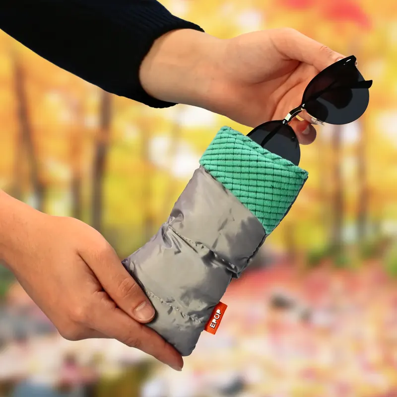

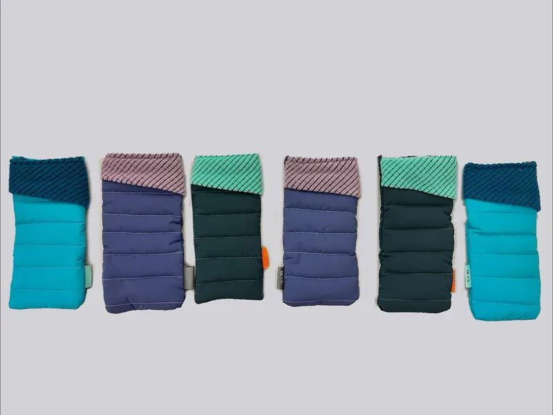

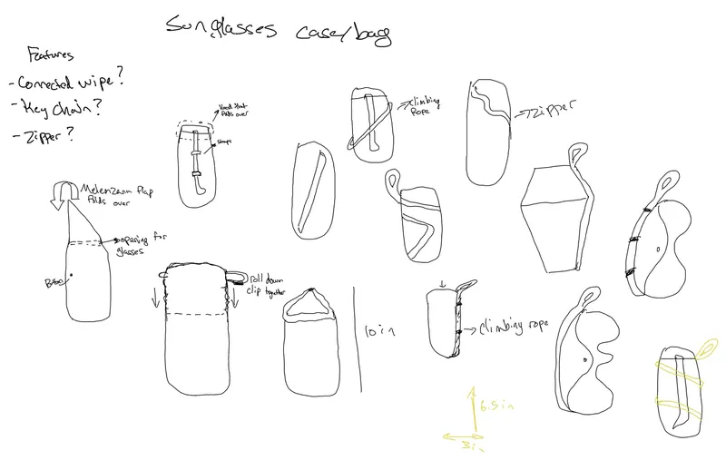

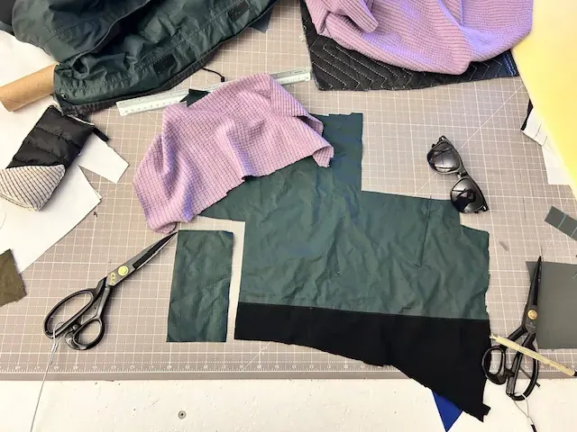

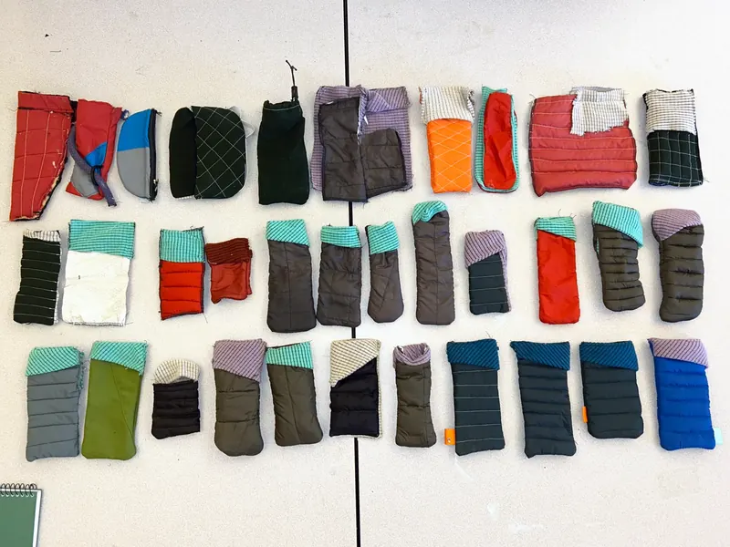

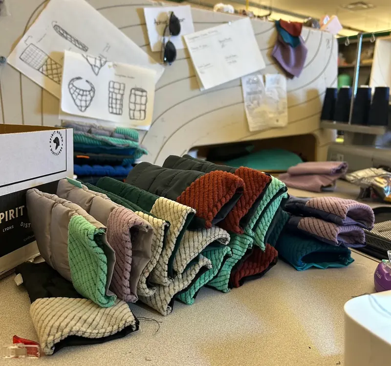

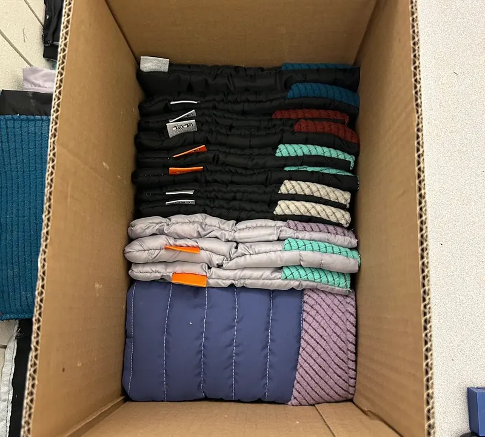

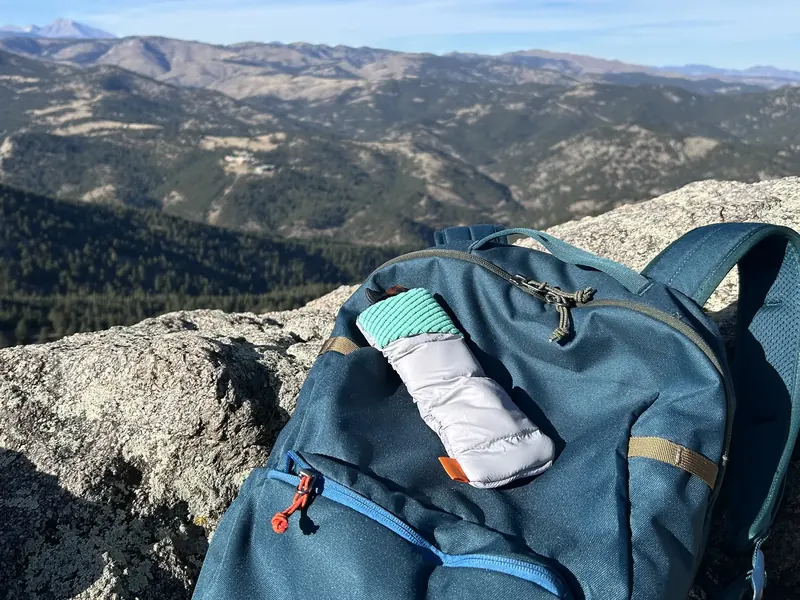

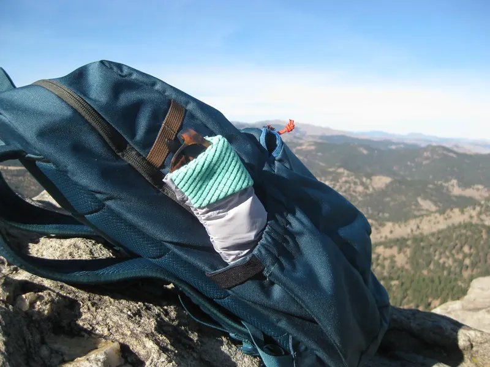

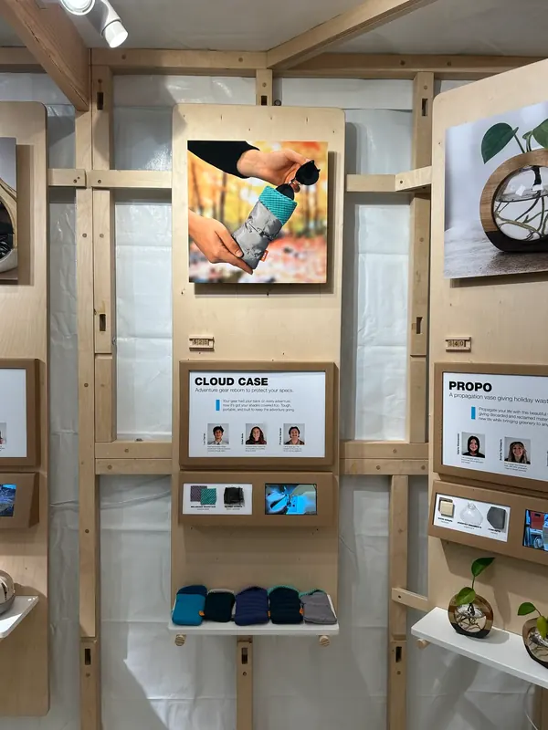

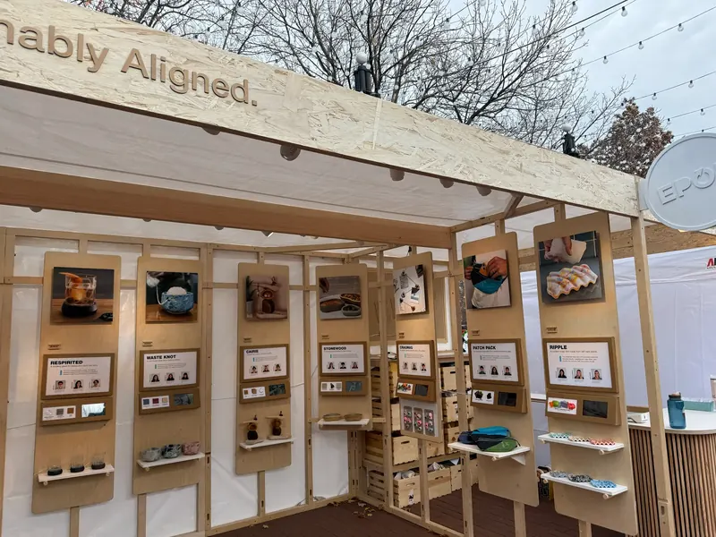